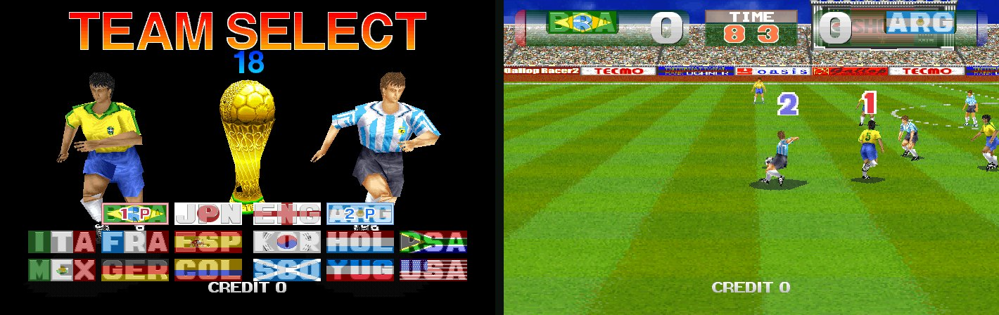
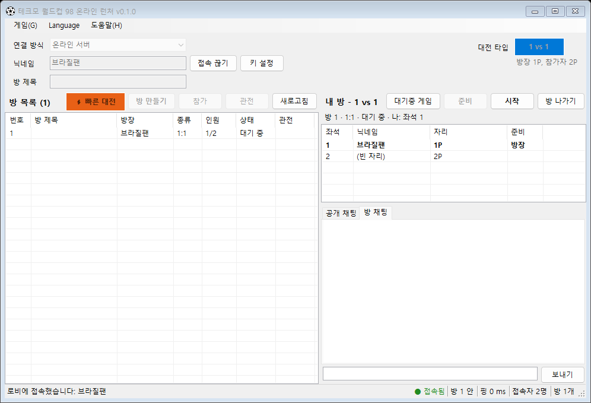

FEATURES
코인 넣고, 시작 누르고, 킥오프
두 사람이 함께 팀 선택 화면에 도착합니다. 나라는 각자 고르고, 1P 대 2P 친선 경기가 두 PC에서 한 프레임도 어긋나지 않고 함께 돌아갑니다.

-
팀 선택까지 자동
코인과 시작 버튼은 런처가 알아서 누릅니다. 팀 선택 화면부터는 직접 하면 됩니다.
-
골키퍼가 멈추지 않습니다
MAME에서는 낮은 슛을 잡은 골키퍼가 공을 든 채 영원히 멈추곤 했습니다. 경기하는 모든 PC에서 고쳐서 돌립니다. 아래에서 자세히.
-
관전
경기 중에도 최대 4명까지 들어와서 볼 수 있습니다. 진행 중인 경기를 받아서 그대로 따라갑니다.
-
인터넷에서도 부드럽게
입력 지연을 핑에 맞춰 2~8프레임으로 정하고 경기 중에도 조절합니다. 이름, 핑, 입력 지연은 화면 아래 얇은 막대에 나옵니다.
-
내 키 그대로
처음 한 번 싱글게임에서 키를 정하면 끝. 온라인 경기 중에는 Tab, F1~F12, 일시정지, Esc가 잠겨서 실수로 경기가 멈추지 않습니다.
-
서버 또는 직접 연결
온라인 서버로 하거나, 내 PC로 방을 열어 친구가 내 주소로 들어오게 할 수 있습니다.
MAMETESTERS 09491
공을 놓지 않던 골키퍼
2P 쪽 골키퍼에게 낮은 슛을 잡히는 순간 경기가 끝나 버렸습니다. 공을 든 채 걸어 나와 서 있고, 시간이 다 돼도 아무것도 진행되지 않았습니다. MAME 버그 게시판에 미해결로 남아 있던 문제를 끝까지 추적했습니다.
- 0 ÷ 0골키퍼가 목표 지점에 서면 각도 계산이 SH-2 나눗셈기로 0 ÷ 0을 합니다.
- 0x7FFFFFFF칩은 매뉴얼대로 최댓값을 돌려주고, 각도표를 찾는 주소가 표 밖으로 한참 벗어납니다.
- 0xA5A5그 주소는 SH-2에서 정의되지 않은 영역이고, MAME는 임시 값 0xA5A5를 줬습니다. 골키퍼 방향이 매 프레임 그 값으로 고정됩니다.
- 수정그 영역을 읽을 때 일반 메모리를 보게 했습니다. 경기하는 모든 PC에서 똑같이. 멈추던 장면 13개가 모두 정상으로 이어졌습니다.
KICK-OFF
경기장까지 네 단계
-
압축을 폴더에 모두 풀기
압축 파일 안에서 바로 실행하지 마세요. 폴더 이름에 한글이 있어도 됩니다.
-
게임 롬 넣기
가지고 계신 twcup98.zip, stvbios.zip(MAME 0.289 기준)을 런처의 롬 설정 창에 넣으면 mame\roms에 알맞게 복사하고 확인합니다.
-
TWCLauncher.exe 실행
연결 방식을 고르고 닉네임을 넣은 뒤 [접속]. 처음에는 키 설정용 싱글게임이 켜집니다.
-
준비, 그리고 킥오프
[방 만들기] 또는 [참가]. 상대가 [준비]하면 방장이 [시작]합니다. 방장은 1P, 참가자는 2P입니다.

온라인 서버
그대로 [접속]하면 됩니다. 방, 채팅, 경기가 서버를 거쳐서 포트를 열 필요가 없습니다.
직접 연결 · 방 열기
내 PC가 방이 됩니다. 다른 집에서 들어오려면 공유기에서 TCP 7210 포트를 열고, Windows 방화벽 창에서 허용해 주세요.
TCP 7210
직접 연결 · 참가
방장에게 받은 주소를 넣고 [접속]. 포트를 빼면 7210으로 접속합니다.
DOWNLOAD
런처 받기
압축 파일 하나에 런처, 골키퍼 수정이 들어간 넷플레이 스크립트, 공식 MAME 0.289가 들어 있습니다.
TWCOnline.zip 받기다운로드는 곧 열립니다.
- 운영체제
- Windows 10 · 11 (64비트)
- 설치
- 필요 없음 · 풀어서 실행 (.NET 포함)
- 게임 롬
- 포함 안 됨 · twcup98.zip + stvbios.zip
- PC 사양
- 세가 ST-V 기판이라 MAME에서 무거운 편입니다. 데스크톱을 권하고, 얇은 노트북은 속도가 모자랄 수 있습니다
게임 롬 파일은 내려받는 파일에 들어 있지 않습니다. 직접 가지고 계신 롬을 넣어 주세요.